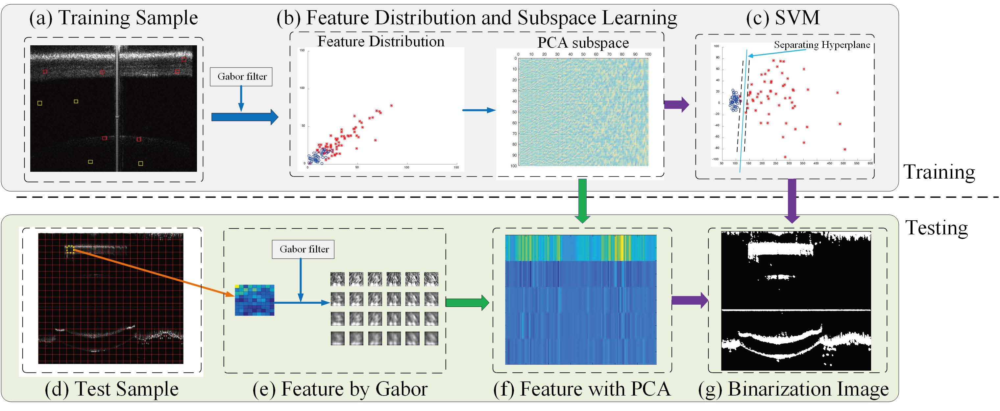

MIP Lab（医学图像处理实验室） |
||
|---|---|---|
欢迎来到MIP Lab（实验室负责人：马飞 ORCID）. 本实验室隶属于计算机学院先进医学图像处理团队，团队有骨干成员6人，博士学位人员5人，高级职称6人。主要在医学成像方法，图像数据采集，重建，智能处理和图像检索与识别等相关领域展开研究，致力于高质量医学图像的获取、识别和挖掘。团队成员目前与西安电子科技大学智能信息处理实验室、中国科学院深圳先进技术研究院、第四军医大学生物医学工程学院和上海应用技术大学等单位在数据共享、学术交流方面始终保持密切合作关系。小组成员目前主持或承担国家自然科学基金、省优秀中青年科学家科研奖励基金，山东省科技攻关计划等各级科研课题10余项，经费达130多万元，在国内外重要学术期刊和会议发表论文200余篇，其中重要科研成果发表在IEEE Transactions on Medical Imaging, Optics Express, Optics Letters, IEEE Transactions on Nuclear Science, Journal of Biophotonics 和Journal of Biomedical Optics等国际著名SCI期刊上。 |
||
基于特定patch和SVM的分类框架用于OCT活体小鼠眼睛图像二值化研究
|
||
| 基于特定patch和SVM的分类框架流程图如下所示：（本框架基于patch提取特征的思路适合于小样本处理） | ||
|  | ||
| 基于特定patch和SVM的分类框架和对比方法处理结果如下：原始样本、金标准图像样本和不同方法的结果。（A）原始样本；（B） 金标准图像样本。（C–E）：迭代法、Otsu和K-means方法的结果。（F）提出的SPSVM方法的处理结果。可以看出原始样品的亮度较低。 | ||
|
| ||
| 我们课题组针对眼睛图像样本开发了一个制作金标准的工具（命名为MakeGT），利用C#开发，运行环境为netframework2.0。我们还可以根据新的需求进行改进完善制作金标准的工具。另外，我们的MakeGT可以提供多种不同类型的金标准制作需求，例如细胞分割，组织连接区域绘制，血管分割等。 | ||
|
单位: 曲阜师范大学计算机学院 Email: mafei0603@163.com |